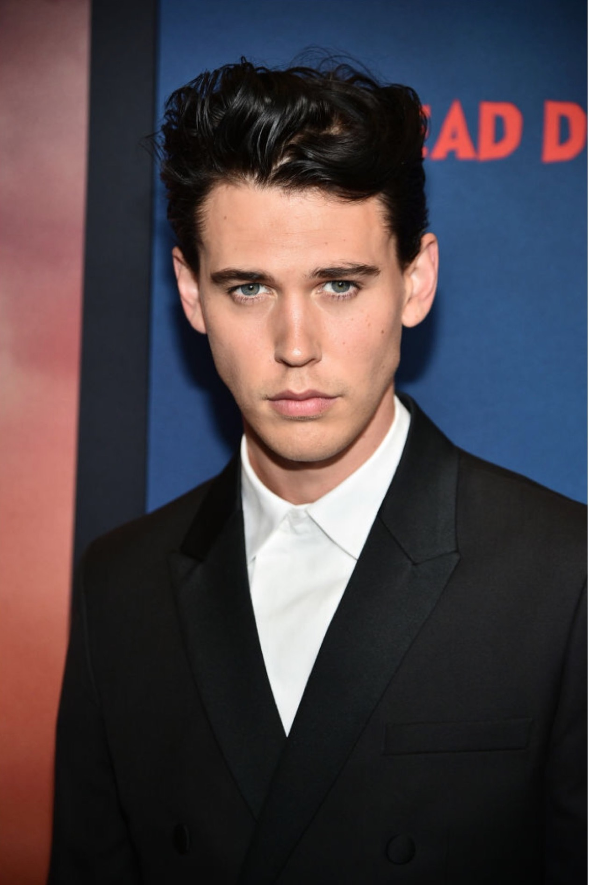
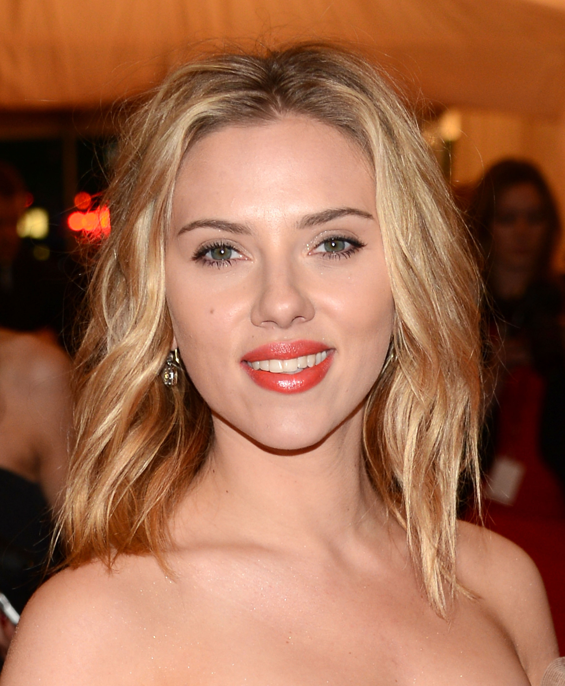
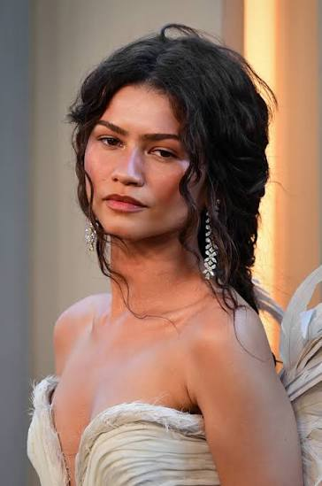
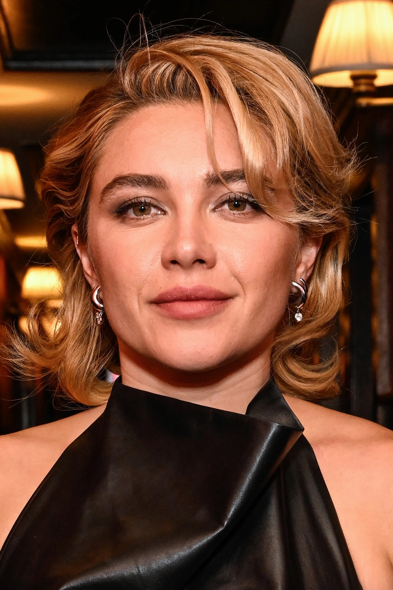
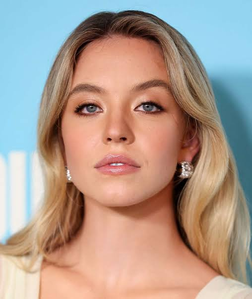
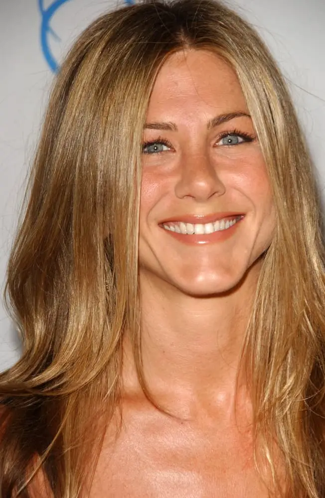
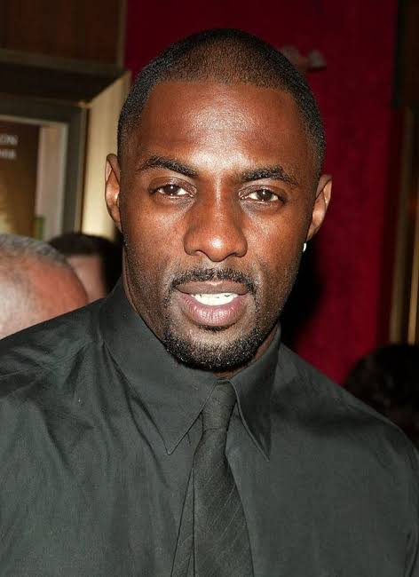
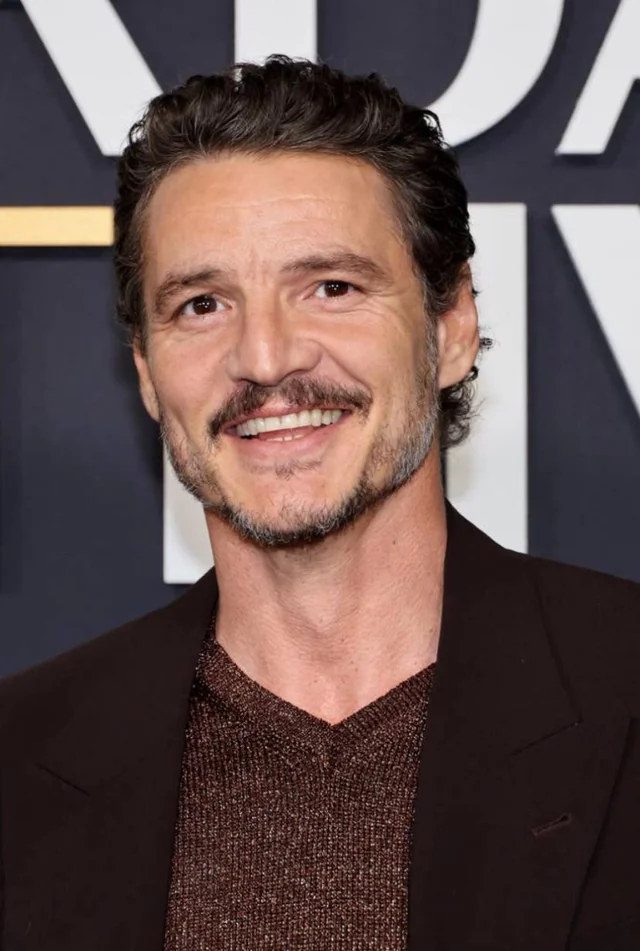

lunch dates
manifesting lunch with your favorite main characters
😻 2000s Heartthrobs
Robert Pattinson
Known for: The Batman, Twilight, and chaotic indie movie energy.
He will order a deeply unhinged food combination, tell a completely fabricated lie with a straight face, and look beautifully moody doing it.
Ian Somerhalder
Known for: The Vampire Diaries, Lost, and eyes that look right through your soul.
He will stare intensely at you over a glass of bourbon while talking passionately about saving the planet, and honestly, you'll let him.
Harry Styles
Known for: Don't Worry Darling, solo pop royalty, and a masterclass in cardigans.
He will show up in a crochet top, feed you a strawberry, and make a casual Tuesday afternoon feel like a warm, hazy summer festival.

Austin Butler
Known for: Elvis, Dune: Part Two, and possessing a voice that vibrates at a low frequency.
Even just ordering a side of bread with him feels like an old-school, high-drama Hollywood romance happening in slow motion.
✨ hollywood baddies

Scarlett Johansson
Known for: Black Widow, Lost in Translation, and that iconic raspy voice.
She brings that effortless, cool-older-sister energy to the table where she shares vintage Hollywood gossip over an iced espresso.

Zendaya
Known for: Dune, Euphoria, and effortlessly clearing every red carpet she steps on.
Because you deserve to bask in that radiant golden-hour energy while she gives you the ultimate fashion reality check over iced matcha.

Florence Pugh
Known for: Midsommar, Little Women, and her iconic cooking videos on Instagram.
She will aggressively defend your food order, match your chaotic energy, and probably steal half your fries when you aren't looking.

Sydney Sweeney
Known for: Anyone But You, Euphoria, and reviving the classic rom-com single-handedly.
She has major "bestie who will fix your car engine and then take you out for milkshakes" energy, and who doesn't want that?

Jennifer Aniston
Known for: Friends, The Morning Show, and having the most legendary hair in television history.
She will order a suspiciously healthy but delicious salad and give you life-changing wellness advice that actually works.
☕ charismatic cuties

Idris Elba
Known for: Luther, The Wire, and being the smoothly sophisticated gentleman of your dreams.
He will make a standard lunchtime salad feel like an exclusive, high-end VIP experience just by sitting across from you.
Chris Evans
Known for: Captain America, Knives Out, and the internet's favorite cable-knit sweater.
He will laugh with his entire body, aggressively recommend a book he loves, and show you fifty pictures of his dog Dodger.
Sebastian Stan
Known for: The Winter Soldier, Pam & Tommy, and masterfully playing slightly unhinged men.
He brings the perfect amount of brooding Brooklyn charm and chaotic sweetheart energy to a completely sun-drenched cafe patio.

Pedro Pascal
Known for: The Last of Us, The Mandalorian, and being the internet's absolute favorite person.
He gives the ultimate warm-hug energy, will genuine-laugh at your worst jokes, and immediately order the best spicy snacks on the menu.